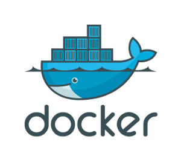
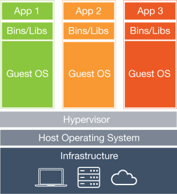
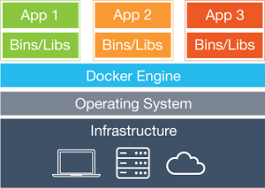

Introduction
Virtual Machines have been extensively used both in virtual private servers by web services provider, as well as in scientific environments to ensure that a whole team is working with the same software, libraries and configuration. This helps to mitigate the dependency hell and is a step forward to ensure reproducibility in computational experiments.
However, the use of virtual machines implies a high overhead, as each virtual machine has to execute a full operating systems, with its associated drivers, hardware libraries. This has a huge impact in performance that can be inadmissible in some environments.
Recently, a new technology came to solve this overhead. We are talking about containerization.
In Linux systems, the reference containerization software is docker.
Docker vs Virtual Machines
A we said before, virtualizing the a whole computer just to run some software is highly inefficient. Docker and other containerization software solve this problem by communicating directly with the kernel, via LXC (Linux Containers). This way, a given application can be executed in a given environment without running the whole environment itself. This eliminates a layer in the virtualization process (as it can be seen in the image below).
 
As consequence, containerized applications have virtually the same performance as if they were running natively.
Images, containers and registry
Docker uses a certain terminology and the first thing is getting to know it.
docker daemon:
The docker daemon is a program that is executed in background. It listens to the commands issued by the docker client and is the responsible of the actual execution of the containers.
image:
An image is a collection of libraries and executables needed by a certain container to run.
container:
A container is a instance of an application from an image running by the docker system in an enclosed environment. Each container is independent from the others.
registry:
A registry is a cloud based image distribution system. Can be either private or public. The official docker registry is the docker hub.
Let's begin!
It's time to grab a terminal and start playing with docker. Install the software on debian based linux distributions should be as easy as typing apt-get install docker.io. (Warning!: do not confuse package name docker with docker.io!)
Docker commands
Interfacing the docker engine is done via commands, issued as docker <command>, where <command> can be:
run: runs a container from an image.images: list available images within the host system.ps: list containers.exec: runs a command in a running container .kill,stop,start,restart: kills, stops, starts or restarts a container.- ...
Executing docker without arguments will print a detailed list of available commands. docker <command> --help will print help.
Hello World
We will now print a dockerized hello world. The command to execute is:
docker run ubuntu /bin/echo "hello world"
wich means: Hey, docker! Grab the ubuntu image from the registry if it doesn't exits yet, create a ubuntu environment, run a container executing /bin/echo "hello world" and exit!
That was a lot of work to simply print a string on the screen.
Interactive bash session
The same way we ran /bin/echo, we can run /bin/bash, so...
docker run ubuntu /bin/bash
Oh... it didn't worked. Why? Because we have to tell docker to allocate a pseudo TTY (option -t) and to attach the standard input to the container (option -i). Now
docker run ubuntu -t -i /bin/bash
greets us with a root terminal in a dockerized ubuntu. But remember! We are only running bash! Not the whole Ubuntu! That's precisely the point of docker: being able to run applications in a isolated and controlled environment without running the whole environment itself!
In this bash session we can run whatever command we like (including apt-get, of course) and access the network. You may install new software, but changes won't be permanent.
If we open another terminal window on the host machine and execute docker ps, we will see our bash container running with an associated container ID (some hexadecimal number like f0ef61c5fc04 and a human-friendly random name (reverent_lumiere, by example).
We can stop the container (docker stop reverent_lumiere, which will kick you out of the terminal), start it again were it was left (docker start reverent_lumiere) and reattach to the terminal with docker attach reverent_lumiere.
Note that we can give a custom name to our containers by creating it with the flag -name containername
Daemonizing containers
Most of the useful applications in linux are not interactive. Web servers, databases and services alike run in background (daemons). If we want a container to be daemonized we simply add the -d switch to the docker client: docker run -d ubuntu command.
Creating Docker images
You may want to create a custom docker image. Maybe you are working in a team and you are using a specific version of python and a custom tuned numpy library. A great way to ensure that everyone uses the same environment is building and shipping a docker image.
There are two ways of creating an image:
Incremental changes
Changes to an image done with a bash interactive session will not be persistent unless you commit them. You can commit changes in a git style using docker commit. Example:
docker commit -m "Commit message" -a "authorname" containerID user/newimagename:tag
Using a DOCKERFILE
Running a bash session and commiting the changes may be inconvinient to manage images and deploy to a large team. Luckily we can automate the process and specify creation commands in a bash-style script: the Dockerfile.
Below you can see a Dockerfile template:
################################################
# Dockerfile template to build a simple image #
# Based on Ubuntu 14:04 #
################################################
# Set the base image to Ubuntu
FROM ubuntu:14.04
# File Author
MAINTAINER Maintainer's Name
# Update the repository
RUN apt-get update
# Run a command. In this case, we are installing software using apt-get
RUN apt-get install -y build-essential
# Tell docker what to execute when running the image
ENTRYPOINT /bin/bash
Alternatively, you can download it here.
In order to build the image, just type docker build -t username/imagename:tag /path/to/dockerfile
Scientific tools for FEEG-6003
For this blog post, we put togheter a sample container with some interesting scientific tools. Check it out at:
Scientific tools sample container: feeg6003/scicomp:v1
Working with data
It is possible to share data between the container and the hosts OS:
docker run --name data -v /home/feeg6003-docker/data:/data feeg6003/scicomp:v1 /bin/bash
the switch -v tells docker to mount the first directory into the specified directory of the container and the switch --name assigns a custom name to it.
Virtual Machine
If you want to reproduce the steps in this short tutorial, you can download a very simple lubuntu 14.04 64-bits virtual machine from here. Docker.io is pre-installed, so you can inmediatly start playing around. Username: feeg6003-docker Password: feeg6003-docker
Workshop related links
Some other useful links